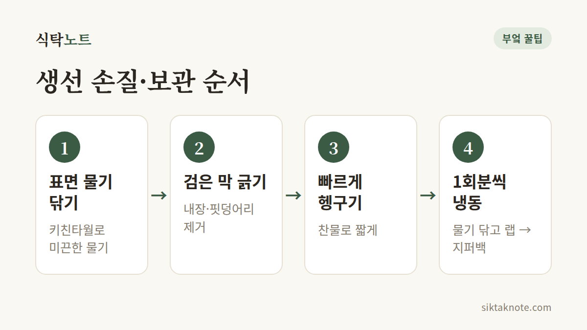

생선 비린내 안 나게 손질하고 보관하는 법

3줄 요약
- 손질 전 키친타월로 표면 물기부터 닦아내세요.
- 내장과 배 속 검은 막을 깨끗이 긁어내고 찬물에 빠르게 헹궈요.
- 보관할 땐 물기를 완전히 닦고 한 번 먹을 만큼씩 랩으로 싸서 냉동하세요.

어떻게 해야 할까요
생선을 사 오면 먼저 키친타월로 표면의 미끈한 물기를 닦아내세요. 비린내의 원인 성분이 이 물기에 많이 들어 있어요.
그다음 찬물에 빠르게 헹구며 남은 비늘과 핏물을 씻어냅니다. 내장을 손질하셨다면 배 안쪽의 검은 막과 등뼈 옆 핏덩어리도 꼼꼼히 긁어내세요. 이 부분이 비린내의 또 다른 원인이에요.
마지막으로 키친타월로 다시 한 번 물기를 완전히 닦아주세요. 물기가 남아 있으면 구울 때 기름이 튀고 비린내도 더 올라와요.
바로 먹지 않을 거라면 한 번 먹을 만큼씩 랩으로 싸고 지퍼백에 담아 공기를 빼고 냉동하세요. 공기와 닿는 면이 적을수록 산화가 느려져 더 오래 신선해요.
왜 그런지
생선 비린내는 살 속의 성분이 세균에 의해 분해되면서 생기는 트리메틸아민이라는 물질 때문이에요. 표면 물기와 내장, 핏물에서 이 과정이 빨리 일어나서, 깨끗이 닦고 차갑게 둘수록 비린내가 덜 나요.
주의할 점
씻을 때는 반드시 찬물로 짧게 헹구세요. 물에 오래 담가두면 살이 물러지고 맛도 빠져요.
물기가 남은 채로 냉장고에 넣으면 비린내가 금방 올라와요. 닦고 싸는 수고 한 번이 생선 맛을 크게 바꿔줍니다.